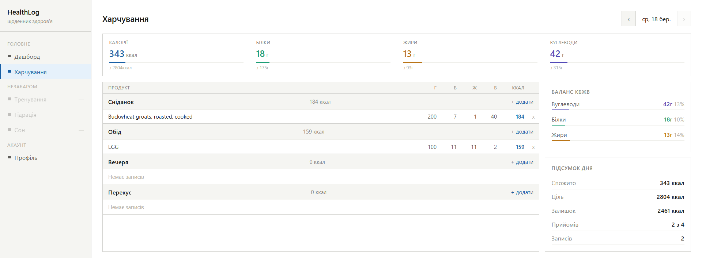
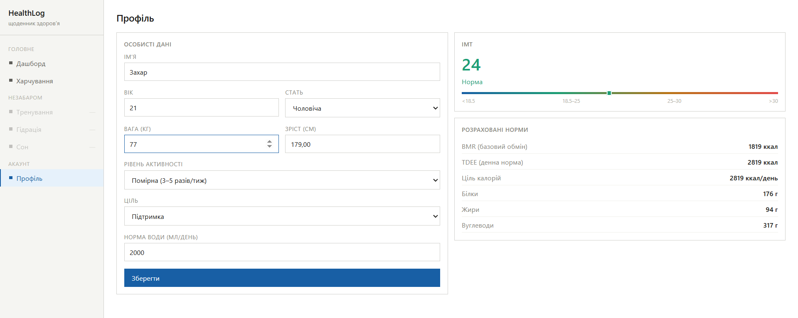

Інформаційна система комплексного супроводу здорового способу життя
Information system for comprehensive support of a healthy lifestyle
Бакалаврська робота Соляра Захара. Розробка веб-застосунку для моніторингу та супроводу здорового способу життя на базі React, Node.js та PostgreSQL.
Переглянути на GitHubКлючові слова:
- здоровий спосіб життя
- React
- Node.js
- Express
- PostgreSQL
- веб-застосунок
- моніторинг здоров'я
Актуальність теми
Сучасний ритм життя призводить до погіршення здоров'я населення - неправильне харчування, малорухливий спосіб життя та недостатній сон стали масовою проблемою. Існуючі рішення або охоплюють лише один аспект здоров'я, або мають обмежений загальний функціонал.
Дана робота пропонує комплексний підхід - єдина система для обліку харчування, фізичної активності, гідрації та сну з детальною статистикою та розрахунками.
Мета та завдання
Мета роботи - розробити інформаційну систему комплексного супроводу здорового способу життя, яка забезпечує облік, аналіз та візуалізацію даних про харчування, фізичну активність, гідрацію та сон користувача.
- Проаналізувати існуючі аналоги та визначити їх недоліки
- Розробити архітектуру системи з використанням React, Node.js та PostgreSQL
- Реалізувати модулі обліку харчування з інтеграцією бази даних USDA
- Реалізувати модулі обліку фізичної активності, гідрації та сну
- Розробити дашборд зі статистикою та розрахунком IMT і норм КБЖВ
Методологія дослідження
У роботі використовується метод порівняльного аналізу існуючих систем, об'єктно-орієнтоване проєктування та компонентний підхід до розробки інтерфейсу. Технічний стек включає React та Vite для фронтенду, Node.js з Express для бекенду, PostgreSQL як базу даних, JWT для авторизації та bcrypt для безпеки паролів.
Очікувані результати
- Працюючий веб-застосунок з модулями харчування, активності, гідрації та сну
- Інтеграція з API бази даних продуктів харчування USDA
- Автоматичний розрахунок IMT та добових норм КБЖВ на основі профілю користувача
- Єдиний дашборд зі статистикою за обраний період
- Підтримка офлайн-режиму роботи


Контакти
Автор: ст. гр. ІН-24 Соляр Захар
Email: z.solyar@student.sumdu.edu.ua
Телефон: +380981227825
GitHub: github.com/pleezgo